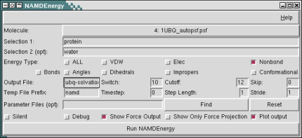

The NAMD Energy plugin provides both a graphical user
interface and text commands for evaluating energies using NAMD. NAMDEnergy will apply the desired energy calculations to each frame of the selected molecule, unless a different frame skip parameter is selected.
Basic Usage
NAMDEnergy operates on either one or two selections; if only one selection is chosen, then internal energies for that selection will be calculated, whereas if two selections are chosen, only interaction energies between those selections will be calculated. Selections are given using the standard VMD atom selection language.
In addition to one or two atom selections, the user must also choose one or more energy types to be calculated. Choices are: bonds, angles, dihedrals, impropers, vdW energy, electrostatic energy, conformational energy (bonds, angles, dihedrals, and impropers), nonbond energy (vdW and electrostatic energy), or all (all other energies). Energies will either be printed to the console or an optionally specified output file. Note that only nonbond energy types are available for interactions between two selections. Note that all energy output is given in kcal/mol, and all force outputs in kcal/(mol Å). Multiple parameter files may be given by specifying the -par switch multiple times.
PME and Periodic Cells
Most trajectories which were performed with periodic boundary conditions will include periodic cell information for each step in the DCD file. However, for proper initialization of a periodic system NAMD must also be fed an initial guess for the periodic cell, which will then be replaced by the data from the trajectory as NAMDenergy runs. This means that if you are running NAMDEnergy on a DCD produced from a periodic run, you should set the "XSC File" option to point to an xsc file from your trajectory. If you don't have one available, click "Generate" and a GUI will allow you to create an appropriate one. If and only if you have a periodic system specified, you can also enable PME by checking the PME box; an appropriate mesh density will be automatically specified.
Text Interface
All options in NAMDEnergy are immediately visible in the GUI, but a text interface is also provided for scripting purposes. In the text interface, energy types are indicated by the switches -bond -angl -dihe -impr -conf -vdw -elec -nonb -all; one or two atom selections should also be given after a -sel switch to define the atom selections to run energy calculations on. The argument for the -sel switches is a variable containing either one or two atom selections; if a single selection is given (i.e., -sel $sel1), then energies for that selection are calculated. If two selections are given (-sel $sel1 $sel2), only interactions between the two selections will be calculated. When using two selections take care that the second atom select does not include any atoms from the first. All other optional parameters use switches defined in the following section.
The text version can be called using the command namdenergy once the namdEnergy package has been loaded. It will return a list of lists, where the first element is a list of the energy headers being output, and each subsequent element is a list of the energy outputs.
NAMDEnergy and AMBER
If your molecule is loaded with an AMBER parm or parm7 file instead of psf, NAMDEnergy should recognize it as such and turn on AMBER mode. In addition, in this case 1-4scaling and scnb will be set to the values shown here.
Optional Parameters
The only required inputs to NAMDEnergy are one selection, and the type of energy to be calculated. A number of optional parameters are available both in the text interface and GUI; these are:
- Output file (-ofile FILE): Gives the name of the file for final energy output to be printed to. If not specified, output will be printed to the vmd console.
- Temp file prefix (-tempname FILE): Prefix for temporary files used by NAMD. These will be deleted after the run unless the debug option is used.
- Switch (-switch NUMBER): Switching distance used by NAMD for nonbond interactions. Default 10. If switch is less than zero, switching will be turned off.
- Cutoff (-cutoff NUMBER): Cutoff for nonbond interactions, used by NAMD. Default 12.
- Skip (-skip NUMBER): Number of frames to skip between every calculated energy frame in NAMDenergy calculations on trajectories. Default 0.
- Timestep (-ts NUMBER): Starting timestep from NAMD; this is purely for bookkeeping purposes. Default: 0
- Step Length (-timemult NUMBER): Length of each timestep that a dynamics trajectory was recorded at, in fs; this is for bookkeeping purposes. Default 1.
- Stride (-stride NUMBER): Number of timesteps between each output in a trajectory; this is purely for bookkeeping purposes. Default: 1
- Parameter Files (-par FILE): One or more parameter files for NAMD to use; a default will be used if none are specified, but you must make sure that it is suitable for your application. Each additional parameter file requires another -par switch.
- Drude (-drude): If present, drude polarizable force field is supported.
- Silent (-silent): If this flag is specified, no energy output will be printed. This is usually only useful for the command line form, when you want to use the returned energy lists as part of another function.
- Debug (-debug): If this flag is specified, temporary files used by NAMDenergy will not be deleted.
- Show Force Output (-keepforce): If this flag is specified, information on force magnitudes will be included in the output from interaction calculations. This only applies for calculating the interaction between two selections.
- Show Only Force Projection (-projforce): This flag is only meaningful when combined with keepforce. When specified, the output forces will be the projection of the total forces onto the vector between the center of mass of the two selections. In this case the forces are signed quantities; a negative force is attractive and a positive force repulsive.
- Plot output (-plot): Use multiplot to plot energy output. Plotting will only occur if there is more than one timestep of data.
- Force GUI (-gui): Force creation of gui from command line, using command line options instead of the defaults. Mostly useful for scripting.
- XSC file (-extsys FILE): Use the specified xsc file to set up a periodic system
- Update selection every frame (-updatesel): Update the selections used for interactions every frame. Use of this option incurs a significant slowdown, but is needed if one or both of the selections contain different sets of atoms in different frames
- Use PME (-pme): Run energy calculations with PME. Only meaningful when combined with -extsys
- -exe: Explicitly set the path to the NAMD executable. By default NAMDEnergy is looking for
a binary named namd2 (or namd2.exe on Windows OSes) in the default executable search path,
defined by the PATH environment variable. This option is only supported in text mode but will be
inherited by future invocations of the GUI.